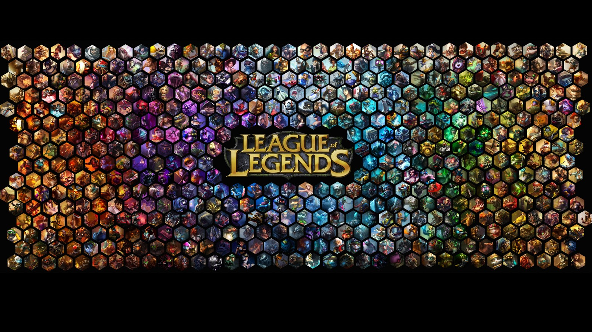
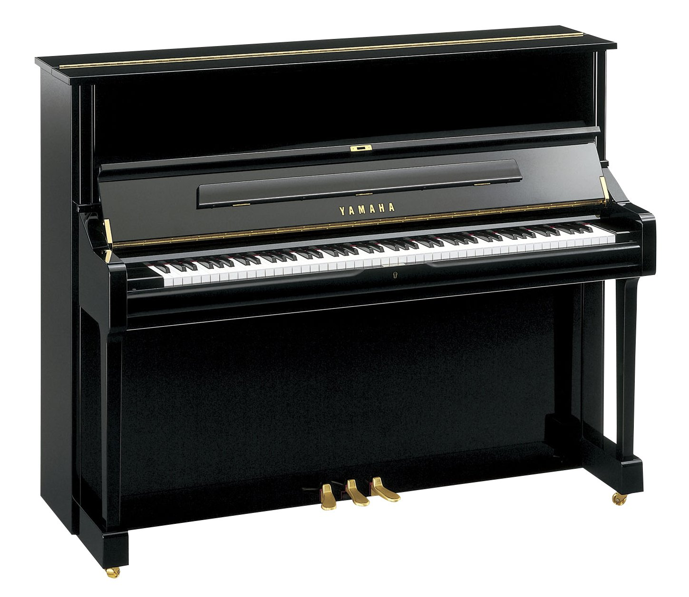

In my number one spot is gaming! I play the games League of Legends, Cuphead, just most good games in general.
my second spot is reading. yes I know it sounds like a oxymoron, like Hot ice-cream or something But I am in love with many books and i hope you enjoy them to.
My third spot goes to playing the piano enough said like what do I need to say am i right..
second to last for this list goes to playing tennis. what I play tennis its fun "the end" like what do you want an essay or something.
And last but not least I like running around my neighborhood an yelling thot. yeah I am that one guy.